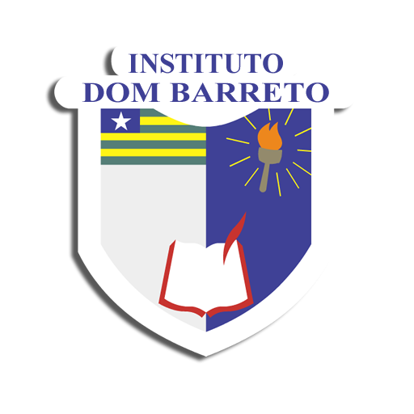
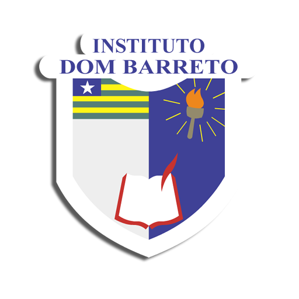

.png)
Comunicação criativa para causas inspiradoras!
Transformamos a sua missão em uma narrativa poderosa. Parceira estratégica para fortalecer marcas e causas com impacto social positivo.
Vamos Conectar!Quem Somos
 22.57.11_ef871074.jpg)
Consultoria de Comunicação Estratégica com Experiência Comprovada
Somos uma consultoria de comunicação estratégica com experiência comprovada no terceiro setor e em projetos de impacto social desde 2019. Nossa jornada começou com a atuação de nossa fundadora, Letícia Florêncio, como Coordenadora de Comunicação para países de língua portuguesa no Movimento Laudato Si'. Nesse papel, ela não apenas liderou, mas também desenvolveu e implementou estratégias de comunicação completas, que iam desde o planejamento de campanhas online e offline, até a produção de conteúdo, gestão de mídias sociais e relações com a imprensa.
Essa experiência sólida na coordenação de iniciativas de grande escala em prol da justiça socioambiental e dos direitos humanos nos permitiu construir uma base de conhecimento prática e aprofundada. O que antes era um papel de coordenação em uma organização, hoje se transformou na expertise de uma consultoria que entende as necessidades e os desafios de marcas e causas que buscam gerar um impacto positivo e duradouro na sociedade.
Soluções Integradas para Causas de Impacto
A nossa missão é clara: transformar a sua causa em uma narrativa poderosa e impactante. Oferecemos soluções integradas que fortalecem marcas e instituições, com foco em temas essenciais como direitos humanos, juventudes, gênero, raça, crise climática e diálogo inter-religioso. A nossa expertise abrange o desenvolvimento e a implementação de estratégias de mídias sociais, produção de conteúdo, branding e design, com um portfólio que inclui a criação de materiais impressos e digitais, como livros acadêmicos digitais para a Ordem dos Advogados do Brasil (OAB).
Temos um histórico de colaboração com grandes parceiros, incluindo Laila Zaid, Observatório do Clima, CNBB e Cáritas, e lideramos iniciativas interculturais que foram adotadas por equipes de outros países. O nosso compromisso com a excelência nos permite adaptar mensagens e estratégias para diversos contextos, como o Brasil, Portugal, Angola e Moçambique.
 22.54.54_71340517.jpg)
 22.51.11_fc230578.jpg)
Reconhecimento Global e Credibilidade Comprovada
A nossa atuação é reconhecida no cenário global. Fomos selecionados para o Bridging Narratives Grant (2024), um projeto internacional que une jornalismo e pesquisa, financiado pelo International Institute of Social Studies (ISS) da Universidade Erasmus de Roterdã, na Holanda. Nossa consultoria também foi incluída no VV Visionaries Program, uma iniciativa da organização global Vital Voices que reconhece as 50 mulheres líderes mundiais com impacto social positivo. Além disso, participamos do programa "Faith and Communication in the Digital World" do Vaticano como representantes das Américas.
Nossa Essência
Missão
Nossa missão é usar a comunicação como uma ferramenta de empoderamento e transformação social, dando voz a projetos e causas que promovem a justiça, a igualdade e a sustentabilidade.
Visão
Ser referência em comunicação estratégica e jornalismo, inspirando uma nova geração de comunicadores engajados na construção de um mundo mais justo, equitativo e humano.
Valores
Nossos valores são a empatia e a integridade, buscando sempre um impacto social positivo através da colaboração e do respeito mútuo. Acreditamos que a comunicação é uma ferramenta para construir um mundo mais justo, equitativo e sustentável.


 

Nossas Soluções
Comunicação e Assessoria Estratégica
Planos sob medida para sua marca ter uma voz clara e autêntica.

Social Media
Gestão, conteúdo estratégico e comunidade ativa e engajada.

Marketing e Tráfego Pago
Anúncios digitais para visibilidade, leads e crescimento.

Design e Web Design
Identidades visuais memoráveis e sites com credibilidade.
Automação e Inteligência Artificial
Ferramentas para otimizar processos e ganhar eficiência.
Nossos Resultados
Conheça alguns projetos transformados em histórias de sucesso.
Design Gráfico e Identidade Visual
Nossa abordagem em design gráfico e identidade visual é criar marcas que se conectam com o público e que transmitem valores de forma autêntica. Desenvolvemos logotipos, paletas de cores e materiais impressos e digitais que fortalecem a sua mensagem e causam um impacto memorável, com a experiência e o olhar aprofundado de quem se dedica a projetos de impacto socioambiental. Nossa expertise na temática foi fundamental para garantir que o projeto alinhasse o rigor técnico com uma comunicação visual de impacto e valores bem definidos.


Comunicação Social e Campanhas de Impacto
Nossa expertise em comunicação social permite transformar ideias em movimentos. Por meio de campanhas digitais e ações estratégicas, damos voz a causas que promovem a justiça e a equidade, como a nossa atuação no Movimento Laudato Si', que mobilizou milhões de pessoas em todo o mundo. Acreditamos que uma comunicação autêntica e bem direcionada é a chave para inspirar a participação e criar um impacto social real e duradouro.


Produção Audiovisual e Storytelling
O audiovisual é a nossa forma de dar vida às histórias. Trabalhamos com roteiros, captação e edição para transformar a sua mensagem em um vídeo que engaja e inspira. Nossa experiência em projetos para a Laila Zaid e outras personalidades mostra como o storytelling visual é essencial para construir uma conexão emocional e ampliar o alcance de causas sociais. Cada vídeo é uma ferramenta poderosa para gerar empatia e mobilização, traduzindo o propósito da sua marca em uma narrativa inesquecível.


Mídias Sociais e Engajamento de Comunidade
Nossas estratégias em mídias sociais são desenhadas para construir comunidades ativas e engajadas. Através de conteúdo relevante, gestão de perfis e interações autênticas, transformamos sua presença online em uma plataforma de conexão e impacto. Com campanhas que combinam criatividade e análise de dados, alcançamos resultados que vão além dos números, gerando conversas significativas e mobilizando seguidores para sua causa.
Vamos Conectar!

Buscando parceria para dar voz à sua causa? Fale com a gente.
Dados de Contato
E-mail: leticiaaraujothe@gmail.com
Telefone: +55 86 99463-9658
Localização: Salvador, Bahia